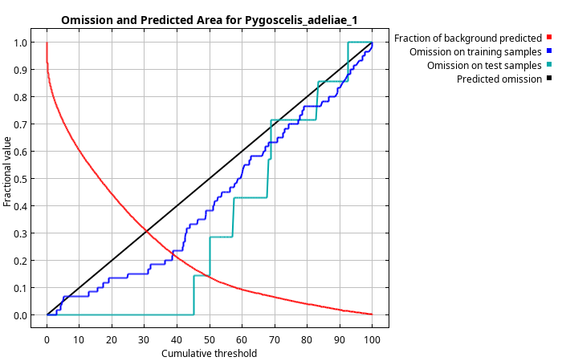
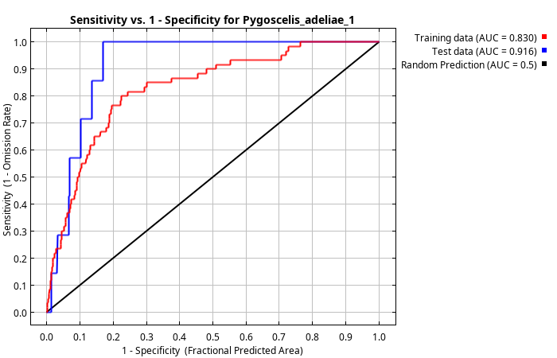
| Cumulative threshold | Cloglog threshold | Description | Fractional predicted area | Training omission rate | Test omission rate | P-value |
|---|---|---|---|---|---|---|
| 1.000 | 0.103 | Fixed cumulative value 1 | 0.846 | 0.000 | 0.000 | 3.111E-1 |
| 5.000 | 0.205 | Fixed cumulative value 5 | 0.710 | 0.050 | 0.000 | 9.079E-2 |
| 10.000 | 0.271 | Fixed cumulative value 10 | 0.602 | 0.067 | 0.000 | 2.856E-2 |
| 3.075 | 0.170 | Minimum training presence | 0.764 | 0.000 | 0.000 | 1.518E-1 |
| 17.345 | 0.321 | 10 percentile training presence | 0.481 | 0.100 | 0.000 | 5.939E-3 |
| 38.737 | 0.465 | Equal training sensitivity and specificity | 0.222 | 0.217 | 0.000 | 2.65E-5 |
| 38.436 | 0.461 | Maximum training sensitivity plus specificity | 0.225 | 0.200 | 0.000 | 2.897E-5 |
| 49.096 | 0.602 | Equal test sensitivity and specificity | 0.142 | 0.383 | 0.143 | 5.092E-5 |
| 45.160 | 0.547 | Maximum test sensitivity plus specificity | 0.169 | 0.333 | 0.000 | 3.982E-6 |
| 3.075 | 0.170 | Balance training omission, predicted area and threshold value | 0.764 | 0.000 | 0.000 | 1.518E-1 |
| 10.846 | 0.282 | Equate entropy of thresholded and original distributions | 0.587 | 0.067 | 0.000 | 2.415E-2 |
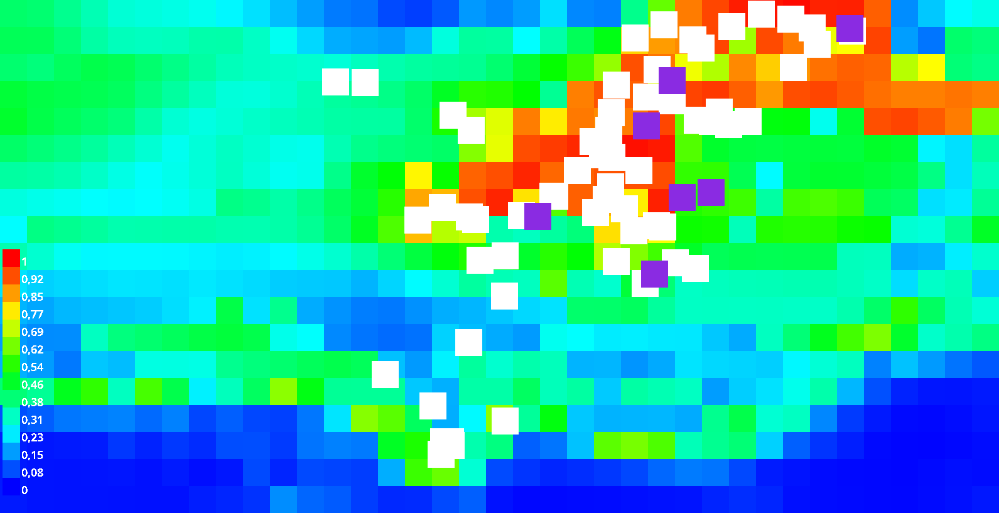
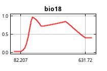
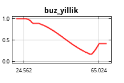
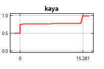
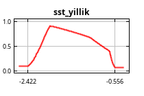
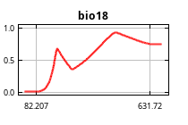
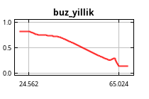
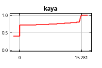
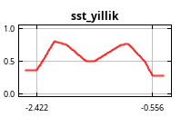
| Variable | Percent contribution | Permutation importance |
|---|---|---|
| buz_yillik | 40 | 54.3 |
| kaya | 25.7 | 3.4 |
| bio18 | 21.6 | 20.9 |
| sst_yillik | 12.6 | 21.5 |